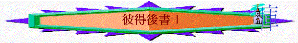

Ａ．背景資料：
|
彼後 |
|
| 作者: |
彼得 |
| 寫作時間 |
AD66 |
| 背景 |
面臨假師傅謬理的信徒 |
| 主題 |
生命知識上長進 |
| key word |
3:18 「長進」 |
| 大綱 |
|
Ｂ．查經：彼後１
一．追求上的提醒(1)
１．本書的重點：（３：１－３）
ａ．ｖ．１題到彼得寫此書（信）目的是甚麼？ 何謂『提醒』? 何謂『激發』
（英文stir up）? 何謂 『誠實的心』（pure minds）?
ｂ．在１：１２講到他們（受信人）在真道上已堅固，為何仍要提醒，仍要激發？
ｃ．最近在靈性追求中有否被提醒，被激發的經歷？ 請分享。
ｄ．在１章中，彼得又提醒信徒甚麼事情？
２．追求的理由：１：３－４
ａ．根據１：３－４，我們信了主後，得著什麼？〔生命〕，〔虔敬〕是什麼意思？ 〔又寶貴又極大的應許〕又是什麼應許？
生命－－屬靈的生命，以前是ｚｅｒｏ 虔敬－－似神，敬神
應許－－得與神的性情有分
ｂ．神有什麼性情？ 你最想學的是什麼？ ｗｈｙ？ 是否信了主，就可以完全 得到？ 但未信人可否得著？ 我們比未信人有什麼強處可以得到？
因是應許，即不能立刻得到
不信者－－不能，因沒有屬靈生命，沒有敬虔的事．．．
信主人－－有生命，有潛質，有應許
ｃ．ｖ．５〔正因這緣故〕是什麼緣故要我們更分外追求？
我們有生命，有潛質，有應許 ＋ 能得與神的性情有分是寶貴的事
ｄ．你有否發現你的團友有美好質數追求？
３．追求的方法及態度ｖ．５－８
ａ．何謂〔要分外殷勤〕，〔有了．．．加上〕，有什麼屬靈含意？
更加勤力，不滿足，有層次的追求
ｂ．試將ｖ．５－７所列出的品德逐一簡釋？ 這樣排列有什麼含意？
ｃ．你最想有那種德行？
４．追求的重要ｖ．９－１１
ａ．１：９有什麼警告？ 〔眼瞎〕，〔忘了．．．〕會是什麼光景？
你有否試過？
ｂ．１：１０應如何解釋？ １：１０－１１我們若肯追求會有什麼益處？
總結：你認為追求有什麼重要地方？ 你會在日後的日子怎追求？